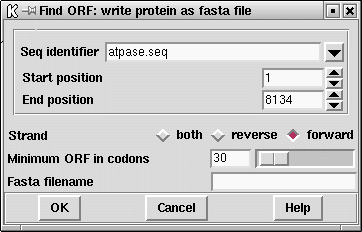

This function will find open reading frames greater than an specified length. The results can be output in two ways, either in feature table format
FT CDS 120..233 FT CDS 161..256 FT CDS 301..396 FT CDS 333..497 FT CDS 512..736 FT CDS 525..965 FT CDS 740..952 FT CDS 754..876 FT CDS 956..1789
or as a fasta file.
>120 120..233 VISENISLLKIGAKNHHWLLKQLLKMSMGGFCCVNVIY* >161 161..256 EPSLAVKTVIKNVNGWFLLCKCHLLNRYLFLD* >301 301..396 ICCARTCAICDLKHALSPVFTRYLQFFMIEQG* >333 333..497 SEARFITSVYALFTVFHDRTGLAEKSQLYALEKYLNIYSPFGYLLFEITGAHRII* >512 512..736 CLTLSLKESFIRHAAYLEGSRSEKRDVCVARESKRCSEASARSVTGGDSKWIAVQPQRPL LGRLCNKRGPGSLSA* >525 525..965 ALKKVLYDTRHTSKGAGVKNVMSVSLVSRNVARKLLLVQLLVVIASGLLFSLKDPFWGVS AISGGLAVFLPNVLFMIFAWRHQAHTPAKGRVAWTFAFGEAFKVLAMLVLLVVALAVLKA VFLPLIVTWVLVLVVQILAPAVINNKG* >740 740..952 RFVYDICLASPGAYTSERPGGLDIRIWRSFQSSGDVGVTGGGVGGFKGGILAADRYVGFG AGGSDTGTGCN* >754 754..876 YLPGVTRRIHQRKAGWPGHSHLAKLSKFWRCWCYWWWRWRF* >956 956..1789 QQRVKGIMASENMTPQDYIGHHLNNLQLDLRTFSLVDPQNPPATFWTINIDSMFFSVVLG LLFLVLFRSVAKKATSGVPGKFQTAIELVIGFVNGSVKDMYHGKSKLIAPLALTIFVWVF LMNLMDLLPIDLLPYIAEHVLGLPALRVVPSADVNVTLSMALGVFILILFYSIKMKGIGG FTKELTLQPFNHWAFIPVNLILEGVSLLSKPVSLGLRLFGNMYAGELIFILIAGLLPWWS QWILNVPWAIFHILIITLQAFIFMVLTIVYLSMASEEH*
The user can select that start and end points over which to do the search, which strand to search (either the forward, reverse or both) and the minimum length of the open reading frame in codons. If the output is being written in fasta format, the name of file is also required.
